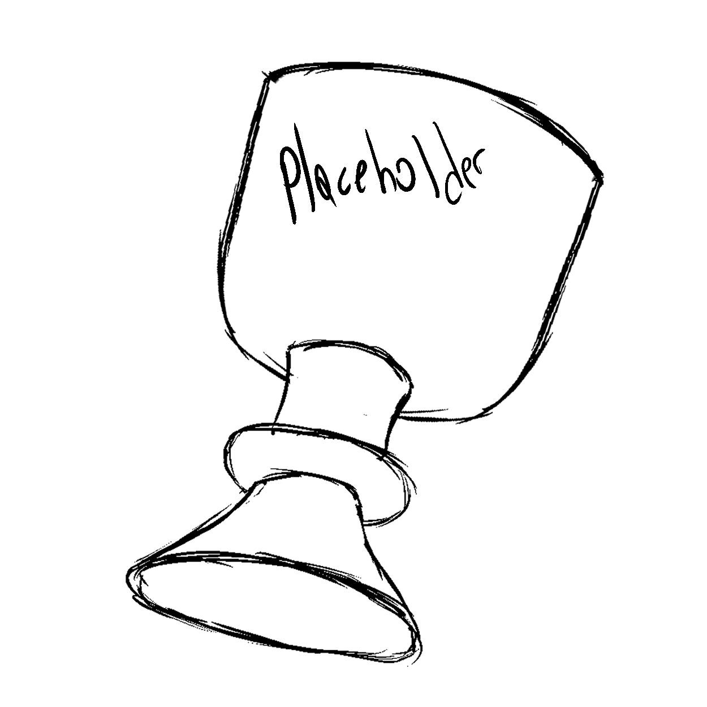

Consumed Chalice
A chalice that once contained a powerful elixir. Some remnants can be found inside, potentially useful scraps for future potions.

A chalice that once contained a powerful elixir. Some remnants can be found inside, potentially useful scraps for future potions.
